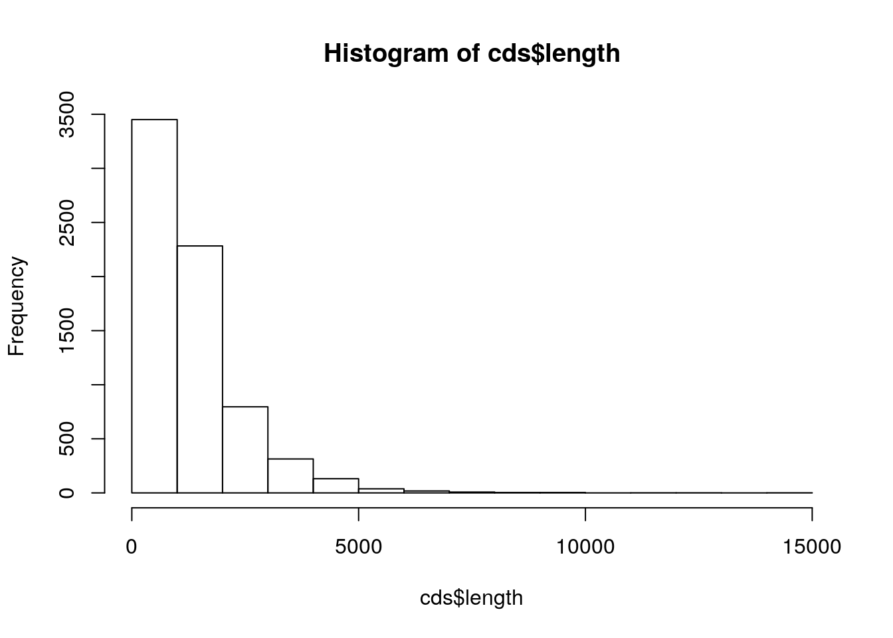
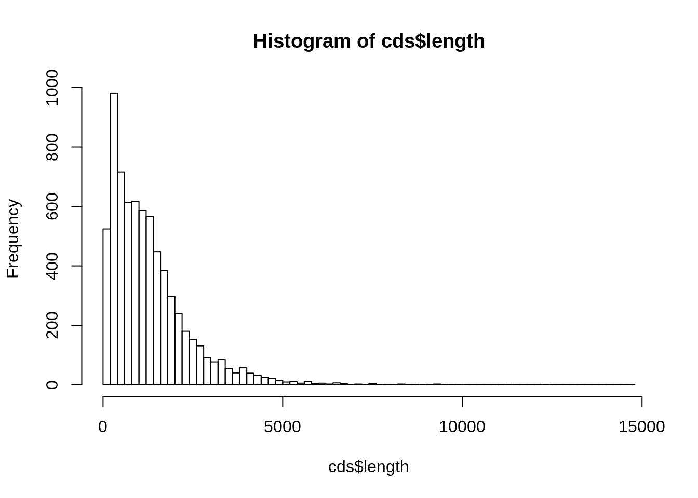
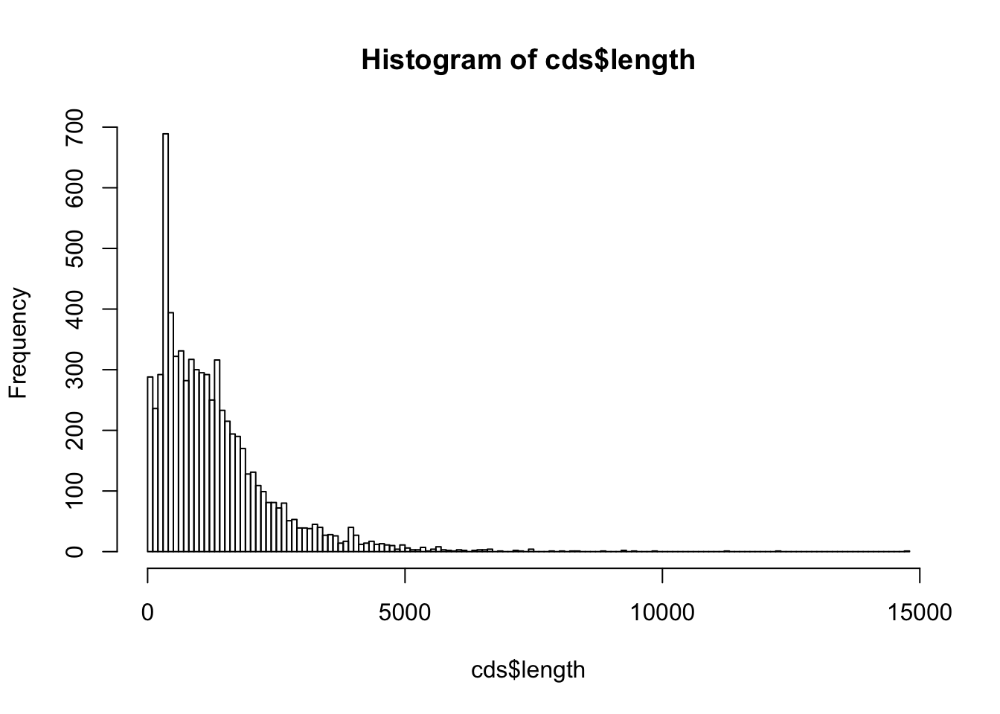
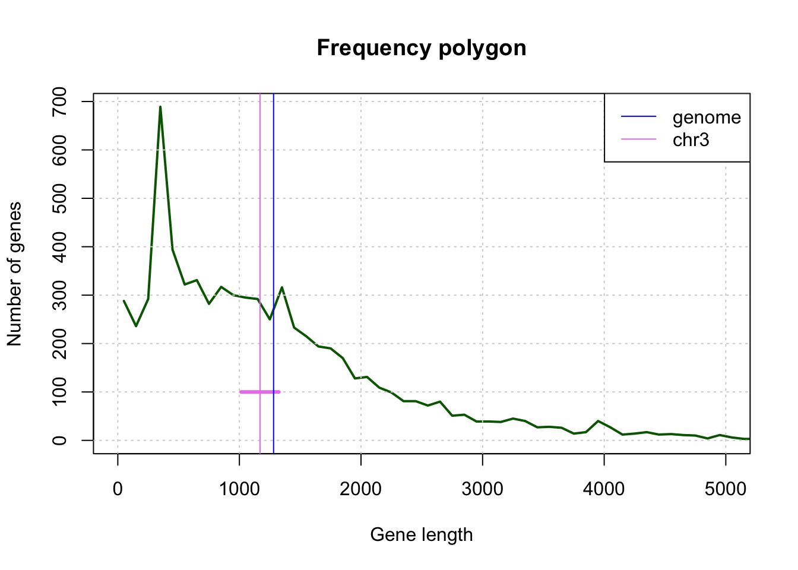

During this practical session, you will run the following tasks:
At the end of the practical you will be asked to submit two documents
The code must be readable and undestandable: choose variable names that explicitly indicate what they represent.
The code must be properly documented (the # symbol starts a comment, either at the beginning or in the middle of a line of code).
Before each chunk of code, explain what this code is supposed to do, what it serves to.
Don’t hesitate to occasionally add some comment words to justify the chosen approach.
Each time you define a variable, add a comment on the same line to indicate what this variable represents.
The code must be portable: other people should be able to download it and run it on their computer. For this practical, I will systematically test whether your code can run on my computer. hard-coded absolute paths of a file on your machine should thus always be avoided (we will indicate hereafter how to define relative paths relative to the root of your user account).
Your report must be synthetic (1 text page max + as many figures and table as you wish)
Each question must be explicitly formulated before presenting the results that answer it and then interpreting those results.
Each figure or table must be documented with a legend that allows a naive reader to understand what it represents. The interpretation of the results displayed on a figure or table will be found in the main text (with a reference to the figure or table number).
On the base of the genes of the 3rd chromosome (sample) we can estimate the average size of a yeast gene.
Questions:
Would the sample mean (chromosome III) be sufficient to predict the population mean (complete genome) ?
To answer this question, we will imagine that we came back in 1992, and will use all the genes of chromosome III (considered here as a sample of the genome) to estimate the average size of genes for the whole genome (the “population” of genes“).
Can this sample be described as “simple and independent” ?
Distribution of cds lengths for Saccharomyces cerevisiae.
Before moving to the exercises, we show you here some basic elements about reading, manipulating and writing data tables with R.
We will create a folder for this tutorial, starting from the root of our account.
First possibility (quick but not very elegant): enter (manually) the path from the root of your account in a variable
dir.home <- /the/path/to/the/home
A more general solution: use the R command Sys.getenv().
Sys.getenv("HOME") returns the path to the root of your account.Note: equivalent writing with Linux: the tilde symbol ~ also indicates the path to the root of your account.
## Identify the home directory
## by getting the environment variable HOME
dir.home <- Sys.getenv("HOME")
print(dir.home)[1] "/home/khamvongsa"## Define a variable containing the path of the results for this tutorial
dir.tuto <- file.path(dir.home, "stat1", "TP2")
print(dir.tuto)[1] "/home/khamvongsa/stat1/TP2"## Create the directory for this tutorial
dir.create(path = dir.tuto, showWarnings = FALSE, recursive = TRUE)
## Go to the tutorial directory
setwd(dir.tuto)
## List the files already present in the folder (if any)
list.files()[1] "3nt_genomic_Saccharomyces_cerevisiae-ovlp-1str.tab"
[2] "chrom_sizes.tsv"
[3] "Saccharomyces_cerevisiae.R64-1-1.37.gtf.gz" Tips: before downloading the annotation file (GTF) from EnsemblGenomes to our computer, we will check if it is already present (and in this case we do not re-download it).
## Define the URL of the annotation file (GTF-formatted)
gtf.URL <- "ftp://ftp.ensemblgenomes.org/pub/release-37/fungi/gtf/saccharomyces_cerevisiae/Saccharomyces_cerevisiae.R64-1-1.37.gtf.gz"
## Define the path where the local copy will be stored
local.GTF <- file.path(dir.tuto, "Saccharomyces_cerevisiae.R64-1-1.37.gtf.gz")
## If the local file file laready exists, skip the download
if (file.exists(local.GTF)) {
message("GTF file already exists in the tutorial folder: ", local.GTF)
} else {
## Download annotation table in GTF format
download.file(url = gtf.URL, destfile = local.GTF)
}R has several types of tabular structures (matrix, data.frame, table).
The most commonly used structure is the data.frame, which consists of an array of values (numeric or strings) whose rows and columns are associated with names.
The function read.table() allows you to read a text file containing a data table, and store the content in a variable.
Several functions derived from read.table() make it easier to read different types of formats:
read.delim() for files whose columns are delimited by a particular character (usually the tab, represented by “”).read.csv() for files “comma-separated values”.## Read a GTF file with yeast genome annotations
## Load the feature table
feature.table <- read.table(
local.GTF,
comment.char = "#",
sep="\t",
header=FALSE,
row.names=NULL)
## The bed format does not contain any column header,
## so we set it manually based on the description of the format,
## found here:
## http://www.ensembl.org/info/website/upload/gff.html
names(feature.table) <- c("seqname", "source", "feature", "start", "end", "score", "strand", "frame", "attribute")The first thing to do after loading a data table is to check its dimensions.
dim(feature.table) ## Dimensions of the tbale[1] 43028 9nrow(feature.table) ## Number of rows[1] 43028ncol(feature.table) ## Number of columns[1] 9The display of the complete annotation table would not be very readable, since it contains tens of thousands of lines.
We can display the first lines with the function head().
Note: the last column is particularly heavy (it contains a lot of information). We will see later how to select a subset of the columns to simplify the display.
## Display the 5 first rows of the feature table
head(feature.table, n = 5) seqname source feature start end score strand frame
1 IV SGD gene 1802 2953 . + .
2 IV SGD transcript 1802 2953 . + .
3 IV SGD exon 1802 2953 . + .
4 IV SGD CDS 1802 2950 . + 0
5 IV SGD start_codon 1802 1804 . + 0
attribute
1 gene_id YDL248W; gene_name COS7; gene_source SGD; gene_biotype protein_coding;
2 gene_id YDL248W; transcript_id YDL248W; gene_name COS7; gene_source SGD; gene_biotype protein_coding; transcript_name COS7; transcript_source SGD; transcript_biotype protein_coding;
3 gene_id YDL248W; transcript_id YDL248W; exon_number 1; gene_name COS7; gene_source SGD; gene_biotype protein_coding; transcript_name COS7; transcript_source SGD; transcript_biotype protein_coding; exon_id YDL248W.1;
4 gene_id YDL248W; transcript_id YDL248W; exon_number 1; gene_name COS7; gene_source SGD; gene_biotype protein_coding; transcript_name COS7; transcript_source SGD; transcript_biotype protein_coding; protein_id YDL248W; protein_version 1;
5 gene_id YDL248W; transcript_id YDL248W; exon_number 1; gene_name COS7; gene_source SGD; gene_biotype protein_coding; transcript_name COS7; transcript_source SGD; transcript_biotype protein_coding;The function tail() displays the last few lines:
## Display the 5 last rows of the feature table
tail(feature.table, n = 5) seqname source feature start end score strand frame
43024 Mito SGD transcript 85554 85709 . + .
43025 Mito SGD exon 85554 85709 . + .
43026 Mito SGD CDS 85554 85706 . + 0
43027 Mito SGD start_codon 85554 85556 . + 0
43028 Mito SGD stop_codon 85707 85709 . + 0
attribute
43024 gene_id Q0297; transcript_id Q0297; gene_source SGD; gene_biotype protein_coding; transcript_source SGD; transcript_biotype protein_coding;
43025 gene_id Q0297; transcript_id Q0297; exon_number 1; gene_source SGD; gene_biotype protein_coding; transcript_source SGD; transcript_biotype protein_coding; exon_id Q0297.1;
43026 gene_id Q0297; transcript_id Q0297; exon_number 1; gene_source SGD; gene_biotype protein_coding; transcript_source SGD; transcript_biotype protein_coding; protein_id Q0297; protein_version 1;
43027 gene_id Q0297; transcript_id Q0297; exon_number 1; gene_source SGD; gene_biotype protein_coding; transcript_source SGD; transcript_biotype protein_coding;
43028 gene_id Q0297; transcript_id Q0297; exon_number 1; gene_source SGD; gene_biotype protein_coding; transcript_source SGD; transcript_biotype protein_coding;If you are using the RStudio environment, you can display the table in a dynamic viewer pane with the function View().
## In RStudio, display the table in a separate tab
View(feature.table) Selection of a line specified by its index.
feature.table[12,] seqname source feature start end score strand frame
12 IV SGD stop_codon 3834 3836 . + 0
attribute
12 gene_id YDL247W-A; transcript_id YDL247W-A; exon_number 1; gene_source SGD; gene_biotype protein_coding; transcript_source SGD; transcript_biotype protein_coding;Selection of a column specified by its index (display of the first values only).
head(feature.table[,3])[1] gene transcript exon CDS start_codon stop_codon
Levels: CDS exon gene start_codon stop_codon transcriptSelection of a cell by combining row and column indices.
feature.table[12, 3][1] stop_codon
Levels: CDS exon gene start_codon stop_codon transcriptSelection of a column and/or row set.
feature.table[100:105, 1:6] seqname source feature start end score
100 IV SGD CDS 34240 36477 .
101 IV SGD start_codon 36475 36477 .
102 IV SGD stop_codon 34237 34239 .
103 IV SGD gene 36797 38173 .
104 IV SGD transcript 36797 38173 .
105 IV SGD exon 36797 38173 .Selection of specific columns (here, the genomic coordinates of each feature): chromosome, beginning, end, strand.
feature.table[100:105, c(1,4,5,7)] seqname start end strand
100 IV 34240 36477 -
101 IV 36475 36477 -
102 IV 34237 34239 -
103 IV 36797 38173 +
104 IV 36797 38173 +
105 IV 36797 38173 +Select a column based on its name.
## Select the "start" column and print the 100 first results
head(feature.table$start, n=100) [1] 1802 1802 1802 1802 1802 2951 3762 3762 3762 3762 3762
[12] 3834 5985 5985 5985 5985 5985 7812 8683 8683 8683 8686
[23] 9754 8683 11657 11657 11657 11660 13358 11657 16204 16204 16204
[34] 16204 16204 17224 17577 17577 17577 17580 18564 17577 18959 18959
[45] 18959 18959 18959 19310 20635 20635 20635 20635 20635 21004 22471
[56] 22471 22471 22474 22606 22471 22823 22823 22823 22823 22823 25874
[67] 26403 26403 26403 26406 28773 26403 28985 28985 28985 28988 30452
[78] 28985 30657 30657 30657 30657 30657 31827 32296 32296 32296 32296
[89] 32296 33232 33415 33415 33415 33418 33916 33415 34237 34237 34237
[100] 34240## Print the 20 first values of the "feature" field, which indicates the feature type
head(feature.table$feature, n=20) [1] gene transcript exon CDS start_codon
[6] stop_codon gene transcript exon CDS
[11] start_codon stop_codon gene transcript exon
[16] CDS start_codon stop_codon gene transcript
Levels: CDS exon gene start_codon stop_codon transcriptSelection of several columns based on their names.
## Select the "start" column and print the 100 first results
feature.table[100:106, c("seqname", "start", "end", "strand")] seqname start end strand
100 IV 34240 36477 -
101 IV 36475 36477 -
102 IV 34237 34239 -
103 IV 36797 38173 +
104 IV 36797 38173 +
105 IV 36797 38173 +
106 IV 36797 38170 +Note: Selection of several columns based on their names. It is also possible to name the rows of a data.frame but the GTF table does not support this. We will see more examples later.
The function subset() allows you to select a subset of the rows of a data.frame based on a condition applied to one or more columns.
We can apply it to select the subset of rows in the annotation table corresponding to coding sequences (CDS).
## Select subset of features having "cds" as "feature" attribute
cds <- subset(feature.table, feature=="cds")
nrow(feature.table) ## Count the number of features[1] 43028nrow(cds) ## Count the number of cds[1] 0The function table() allows you to count the occurrences of each value in a vector or array. Some examples of use below.
## Count the number of featues per chromosome
table(feature.table$seqname)
I II III IV IX Mito V VI VII VIII X XI XII XIII XIV
759 2912 1210 5374 1567 327 2159 946 3856 2054 2617 2231 3789 3311 2774
XV XVI
3846 3296 ## Count the number of features per type
table(feature.table$feature)
CDS exon gene start_codon stop_codon transcript
7050 7872 7445 6700 6516 7445 Contingency tables can be calculated by counting the number of combinations between 2 vectors (or 2 columns of a table).
## Table with two vectors
table(feature.table$feature, feature.table$seqname)
I II III IV IX Mito V VI VII VIII X XI XII XIII
CDS 122 492 194 895 255 59 345 151 619 346 422 361 615 544
exon 137 525 224 961 288 94 400 180 710 373 480 404 698 610
gene 132 494 213 914 274 62 383 167 676 349 458 388 658 573
start_codon 119 464 185 853 243 28 328 143 593 325 406 348 586 514
stop_codon 117 443 181 837 233 22 320 138 582 312 393 342 574 497
transcript 132 494 213 914 274 62 383 167 676 349 458 388 658 573
XIV XV XVI
CDS 458 623 549
exon 500 689 599
gene 475 665 564
start_codon 438 607 520
stop_codon 428 597 500
transcript 475 665 564## Same result with a 2-column data frame
table(feature.table[, c("feature", "seqname")]) seqname
feature I II III IV IX Mito V VI VII VIII X XI XII XIII
CDS 122 492 194 895 255 59 345 151 619 346 422 361 615 544
exon 137 525 224 961 288 94 400 180 710 373 480 404 698 610
gene 132 494 213 914 274 62 383 167 676 349 458 388 658 573
start_codon 119 464 185 853 243 28 328 143 593 325 406 348 586 514
stop_codon 117 443 181 837 233 22 320 138 582 312 393 342 574 497
transcript 132 494 213 914 274 62 383 167 676 349 458 388 658 573
seqname
feature XIV XV XVI
CDS 458 623 549
exon 500 689 599
gene 475 665 564
start_codon 438 607 520
stop_codon 428 597 500
transcript 475 665 564Read the GTF format specifications.
Create a local folder (for example: stat1/TP_yeast from the root of your account). We suggest you to use the following functions:
Sys.getenv("HOME") (Linux and Mac OS X), to get the root of your user account;file.path() to build a path;dir.create() to create the folder for the TP. Read carefully the options of this function with help(dir.create)Locate the yeast genome annotation file in GTF format in this local folder.
Suggested functions:
download.file() (read the help to know the arguments)Write a script that loads the data table into a variable named feature.table, using the function R read.delim().
Be sure to ignore the comment lines (which start with a character #).
feature.table) a column entitled “length” which indicates the length of each annotated genomic feature.## Add a colmn with feature lengths
feature.table[, "length"] <- feature.table[, "end"] - feature.table[, "start"] + 1
## Add a colmn with feature lengths: equivalent result with simpler notation
feature.table$length <- feature.table$end - feature.table$start + 1Count the number of rows in the table corresponding to each type of annotation (3rd column of the GTF, “feature”).
table()~table(feature.table$feature)Select the lines corresponding to coding regions (“CDS”)
subset()Count the number of CDS per chromosome.
table()
I II III IV IX Mito V VI VII VIII X XI XII XIII XIV
122 492 194 895 255 59 345 151 619 346 422 361 615 544 458
XV XVI
623 549 [1] 316617By using the function hist(), draw a histogram representing the length distribution of the CDS.

Choose the class intervals in a way that the histogram is informative (neither too large nor too few classes).

Retrieve the result of hist() in a variable named cds.length.hist.

Print the result on the screen (print()) and analyze the structure of the variable cds.length.hist (this is a list variable).
Useful functions:
$breaks
[1] 0 100 200 300 400 500 600 700 800 900 1000
[12] 1100 1200 1300 1400 1500 1600 1700 1800 1900 2000 2100
[23] 2200 2300 2400 2500 2600 2700 2800 2900 3000 3100 3200
[34] 3300 3400 3500 3600 3700 3800 3900 4000 4100 4200 4300
[45] 4400 4500 4600 4700 4800 4900 5000 5100 5200 5300 5400
[56] 5500 5600 5700 5800 5900 6000 6100 6200 6300 6400 6500
[67] 6600 6700 6800 6900 7000 7100 7200 7300 7400 7500 7600
[78] 7700 7800 7900 8000 8100 8200 8300 8400 8500 8600 8700
[89] 8800 8900 9000 9100 9200 9300 9400 9500 9600 9700 9800
[100] 9900 10000 10100 10200 10300 10400 10500 10600 10700 10800 10900
[111] 11000 11100 11200 11300 11400 11500 11600 11700 11800 11900 12000
[122] 12100 12200 12300 12400 12500 12600 12700 12800 12900 13000 13100
[133] 13200 13300 13400 13500 13600 13700 13800 13900 14000 14100 14200
[144] 14300 14400 14500 14600 14700 14800
$counts
[1] 288 236 292 689 394 322 331 282 317 300 295 292 250 316 233 215 194
[18] 190 170 128 131 109 99 81 81 72 80 51 53 39 39 38 45 40
[35] 27 28 26 14 17 40 27 12 14 17 12 13 11 10 4 11 6
[52] 3 3 7 1 4 8 3 2 1 3 2 0 2 3 3 4 0
[69] 1 0 0 2 1 0 4 0 0 0 1 0 1 0 1 1 0
[86] 0 0 0 1 0 0 0 2 0 1 0 0 0 1 0 0 0
[103] 0 0 0 0 0 0 0 0 0 0 1 0 0 0 0 0 0
[120] 0 0 0 1 0 0 0 0 0 0 0 0 0 0 0 0 0
[137] 0 0 0 0 0 0 0 0 0 0 0 1
$density
[1] 4.085106e-04 3.347518e-04 4.141844e-04 9.773050e-04 5.588652e-04
[6] 4.567376e-04 4.695035e-04 4.000000e-04 4.496454e-04 4.255319e-04
[11] 4.184397e-04 4.141844e-04 3.546099e-04 4.482270e-04 3.304965e-04
[16] 3.049645e-04 2.751773e-04 2.695035e-04 2.411348e-04 1.815603e-04
[21] 1.858156e-04 1.546099e-04 1.404255e-04 1.148936e-04 1.148936e-04
[26] 1.021277e-04 1.134752e-04 7.234043e-05 7.517730e-05 5.531915e-05
[31] 5.531915e-05 5.390071e-05 6.382979e-05 5.673759e-05 3.829787e-05
[36] 3.971631e-05 3.687943e-05 1.985816e-05 2.411348e-05 5.673759e-05
[41] 3.829787e-05 1.702128e-05 1.985816e-05 2.411348e-05 1.702128e-05
[46] 1.843972e-05 1.560284e-05 1.418440e-05 5.673759e-06 1.560284e-05
[51] 8.510638e-06 4.255319e-06 4.255319e-06 9.929078e-06 1.418440e-06
[56] 5.673759e-06 1.134752e-05 4.255319e-06 2.836879e-06 1.418440e-06
[61] 4.255319e-06 2.836879e-06 0.000000e+00 2.836879e-06 4.255319e-06
[66] 4.255319e-06 5.673759e-06 0.000000e+00 1.418440e-06 0.000000e+00
[71] 0.000000e+00 2.836879e-06 1.418440e-06 0.000000e+00 5.673759e-06
[76] 0.000000e+00 0.000000e+00 0.000000e+00 1.418440e-06 0.000000e+00
[81] 1.418440e-06 0.000000e+00 1.418440e-06 1.418440e-06 0.000000e+00
[86] 0.000000e+00 0.000000e+00 0.000000e+00 1.418440e-06 0.000000e+00
[91] 0.000000e+00 0.000000e+00 2.836879e-06 0.000000e+00 1.418440e-06
[96] 0.000000e+00 0.000000e+00 0.000000e+00 1.418440e-06 0.000000e+00
[101] 0.000000e+00 0.000000e+00 0.000000e+00 0.000000e+00 0.000000e+00
[106] 0.000000e+00 0.000000e+00 0.000000e+00 0.000000e+00 0.000000e+00
[111] 0.000000e+00 0.000000e+00 1.418440e-06 0.000000e+00 0.000000e+00
[116] 0.000000e+00 0.000000e+00 0.000000e+00 0.000000e+00 0.000000e+00
[121] 0.000000e+00 0.000000e+00 1.418440e-06 0.000000e+00 0.000000e+00
[126] 0.000000e+00 0.000000e+00 0.000000e+00 0.000000e+00 0.000000e+00
[131] 0.000000e+00 0.000000e+00 0.000000e+00 0.000000e+00 0.000000e+00
[136] 0.000000e+00 0.000000e+00 0.000000e+00 0.000000e+00 0.000000e+00
[141] 0.000000e+00 0.000000e+00 0.000000e+00 0.000000e+00 0.000000e+00
[146] 0.000000e+00 0.000000e+00 1.418440e-06
$mids
[1] 50 150 250 350 450 550 650 750 850 950 1050
[12] 1150 1250 1350 1450 1550 1650 1750 1850 1950 2050 2150
[23] 2250 2350 2450 2550 2650 2750 2850 2950 3050 3150 3250
[34] 3350 3450 3550 3650 3750 3850 3950 4050 4150 4250 4350
[45] 4450 4550 4650 4750 4850 4950 5050 5150 5250 5350 5450
[56] 5550 5650 5750 5850 5950 6050 6150 6250 6350 6450 6550
[67] 6650 6750 6850 6950 7050 7150 7250 7350 7450 7550 7650
[78] 7750 7850 7950 8050 8150 8250 8350 8450 8550 8650 8750
[89] 8850 8950 9050 9150 9250 9350 9450 9550 9650 9750 9850
[100] 9950 10050 10150 10250 10350 10450 10550 10650 10750 10850 10950
[111] 11050 11150 11250 11350 11450 11550 11650 11750 11850 11950 12050
[122] 12150 12250 12350 12450 12550 12650 12750 12850 12950 13050 13150
[133] 13250 13350 13450 13550 13650 13750 13850 13950 14050 14150 14250
[144] 14350 14450 14550 14650 14750
$xname
[1] "cds$length"
$equidist
[1] TRUE
attr(,"class")
[1] "histogram"class(cds.length.hist)attributes(cds.length.hist)Other types of graphs allow you to explore the distribution of a set of data. In particular, box plots display, for a series of data, the median, the quarterfinal range, a confidence interval and outliers.
Boîte à moustache indiquant la distribution de longueur des gènes par chromosome.
Calculate the parameters of central tendency (mean, median, mode) and dispersion (variance, standard deviation, inter-quarterly deviation)
[1] 194 1[1] "data.frame"[1] "numeric"length1 length2 length3 length4 length5 length6
741 1845 1374 780 630 525 [1] "Chromosome III contains 194 CDS"[1] 1169.521Ah ah! (skeptical tone) The R function sd() does not compute the standard deviation of the input numbers (\(s\)), but the estimate of the standard deviaiton of the population (\(\hat{\sigma}\))
Display these parameters on the histogram of gene length, using the function arrows()
From genes of chromosome III (considered as the sample available in 1992), calculate a confidence interval around the mean, and formulate the interpretation of this confidence interval. Then evaluate whether or not this confidence interval covered the average population (all genes in the yeast genome, which became available 4 years after chromosome III).
\[ \bar{x} \pm \frac{\hat{\sigma}}{\sqrt(n)} \cdot t_{1-\alpha/2}^{n-1}\]
[1] -1.972332Draw a polygon of frequencies indicating the number of genes per class (class medium).

From the result of hist(), retrieve an array (in a variable of type data.frame) indicating the absolute frequencies (count) according to the median class size (mids),
Add to this table a column indicating the relative frequency of each class of gene length.
Add columns to this table indicating the empirical distribution function gene lengths (number of genes of a size less than or equal to each observed \(x\) value, and relative frequency of this number).
cumsum()ecdf()by using the functions plot() and lines(), draw a graph representing the absolute frequency per class (medians of classes in \(X\), counts in \(Y\)), and the empirical distribution function.
Based on the genome size (12.156.679 bp) and codon genomic frequencies defined below, calculate the random expected gene length distribution, and add it to the graph.
You can download the genomic frequencies of all polynucleotides here: 3nt_genomic_Saccharomyces_cerevisiae-ovlp-1str.tab
Alternative: create a variable freq.3nt and manually assign the values for the 4? required polynucleotides from the table below.
| sequence | frequency | occurrences |
|---|---|---|
| AAA | 0.0394 | 478708 |
| ATG | 0.0183 | 221902 |
| TAA | 0.0224 | 272041 |
| TAG | 0.0129 | 156668 |
| TGA | 0.0201 | 244627 |
Tractability is an essential issue in science. The function R sessionInfo() provides a summary of the conditions of a work session: version of R, operator system, libraries of functions used.
sessionInfo()R version 3.6.1 (2019-07-05)
Platform: x86_64-pc-linux-gnu (64-bit)
Running under: Ubuntu 18.04.2 LTS
Matrix products: default
BLAS: /usr/lib/x86_64-linux-gnu/blas/libblas.so.3.7.1
LAPACK: /usr/lib/x86_64-linux-gnu/lapack/liblapack.so.3.7.1
locale:
[1] LC_CTYPE=fr_FR.UTF-8 LC_NUMERIC=C
[3] LC_TIME=fr_FR.UTF-8 LC_COLLATE=fr_FR.UTF-8
[5] LC_MONETARY=fr_FR.UTF-8 LC_MESSAGES=fr_FR.UTF-8
[7] LC_PAPER=fr_FR.UTF-8 LC_NAME=C
[9] LC_ADDRESS=C LC_TELEPHONE=C
[11] LC_MEASUREMENT=fr_FR.UTF-8 LC_IDENTIFICATION=C
attached base packages:
[1] stats graphics grDevices utils datasets methods base
other attached packages:
[1] knitr_1.24
loaded via a namespace (and not attached):
[1] compiler_3.6.1 magrittr_1.5 tools_3.6.1 htmltools_0.3.6
[5] yaml_2.2.0 Rcpp_1.0.2 stringi_1.4.3 rmarkdown_1.15
[9] highr_0.8 stringr_1.4.0 xfun_0.9 digest_0.6.20
[13] evaluate_0.14